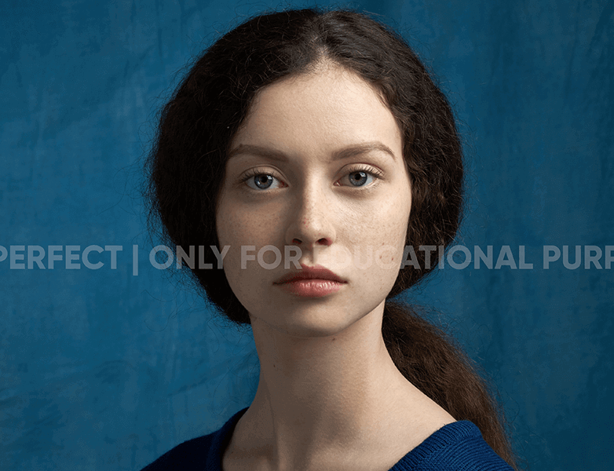

这篇文章上次修改于 901 天前，可能其部分内容已经发生变化，如有疑问可询问作者。
一幅图像能否吸引眼球，最简单的方式就是将主体突出，比如人物的眼睛。所以，在修图中最后一步往往是锐化图像。
锐化的原理就是将像素颜色反差的地方加强反差，而不破坏颜色相似地方的自然过渡。
下面介绍三种不同的方式进行图像锐化。使用的工具主要有以下：
- smart sharpen，blend mode：darken and lighten
- gaussian blur，apply image：subtract
- high pass，contract
智能锐化
首先介绍使用智能锐化工具配合混合模式来进行锐化。
智能锐化相比较其他几个锐化工具多个几个调节项目，可以通过滑块进行精细调节。配合混合模式主要是为了消除部分锐化过后的边沿亮条。
我们的主体是石狮子：
首先复制图层，转换为智能图层，然后选择 filter - sharpen - smart sharpen：
调节 radius 等参数进行适当锐化：
确认后，图像整体已经相比之前突出很多了，但是仔细观察会发现在和背景衔接处有明显的亮条，这就是锐化的副作用：
下面通过混合模式来处理，将锐化后的图层复制一个，将两个图层混合模式分别设置为 darken 和 lighten，这样就可以分别控制亮部和暗部了：
通过分离亮暗部分，通过蒙版来去除我们不想要的锐化过度区域。在 lighten 图层建立蒙版，使用黑色笔刷刷掉亮条部分：
在需要的时候也可以涂抹暗部锐化过度区域，此图经过上面的调节已经可以了：
频率分离
第二种方法叫做：频率分离。以人物图像来举例，皮肤部分色彩过度较均匀，叫做低频部分；睫毛，头发，皮肤纹理等地方颜色反差大，叫做高频部分。在处理人像时，我们常规操作是将低频部分进一步使色彩平滑过渡，也就是磨皮，高频部分进一步加大反差增加清晰感，也就是锐化。
以下面人物为例，介绍操作方法：

复制两个图层，分别命名为 color 和 texture，将 color 图层转换为智能图层方便后期调节参数：
color 图层复制柔化皮肤，texture 图层负责锐化细节。
暂时关闭 texture 图层，选中 color 图层，执行 filter - blur - gaussian blur，调节 radius 使皮肤柔化到合适感觉，暂时不必理会细节丢失：
打开并选中 texture 图层，执行 image - apply image：
layer 选择 color 图层，blending 选择 subtract，scale 设置为 2，offset 设置 128。以上设置的意思是：将 texture 图层剪掉和 color 图层相同像素部分，并将剪掉部分填充为 50% 灰，scale 影响反差敏感度：
将 texture 图层混合模式设置为 linear light：
这样处理后，color 和 texture 就实现了分离，两个图层和原图层几乎是一样的。然后我们就可以单独对texture进行控制了。
复制 texture 图层，图像会明显的锐化过度，调节 fill 填充值来降低锐化效果到合适：
我只想锐化眼睛等区域，配合蒙版来处理：
最终效果：
高反差保留
最后一种方法是高反差保留，配合对比度调节工具，能够实现更加方便的锐化程度调节体验。
还是以上面人物为例进行处理，首先还是复制图层，然后转换为智能图层，将混合模式设置为 overlay：
执行 filter - other - high pass，调节 radius 观察锐化效果，注意不要设置过大而在反差地方出现光晕：
为了能够更加方便的调节锐化强度而不用复制图层，我们执行 image - adjustment - brightness/contrast，选中 use legacy，通过调节 contrast 可以实现锐化强度的调节：
由于我们的图层是智能图层，后期可以根据实际情况再次调节 high pass 和 contrast 的值到合适。
可以配合蒙版来调节锐化影响范围，这里还是只锐化面部重点区域即可用画笔涂抹出想要锐化的部分，最终效果如下：
没有评论